Dans cette vidéo, Jack, un superviseur VFX chevronné, démontre comment les flux de travail par IA générative permettent aujourd'hui de réaliser des effets visuels de niveau professionnel (VFX) autrefois réservés à des studios disposant de budgets massifs et d'années d'expérience. En combinant habilement des séquences tournées en prises de vues réelles (live-action) et la puissance de modèles vidéo de pointe, il est désormais possible de transformer des plans entiers — décors, éclairages, costumes, éléments fantastiques — tout en préservant la performance d'origine, le minutage et la synchronisation labiale du sujet.
La méthode repose sur une rigueur de production rigoureuse héritée des flux VFX traditionnels : préparation des calages, décomposition des éléments de la scène et utilisation de « références d'ancrage » (annotations visuelles, captures annotées). Jack révèle comment structurer et industrialiser la création de prompts complexes en s'appuyant sur des LLM (comme Claude) alimentés par des compétences personnalisées (`.md`), évitant ainsi les approximations et garantissant que l'IA respecte le cadrage et la mise en scène d'origine.
À travers des cas pratiques concrets — du pelage d'une application d'ordinateur portable agissant comme une feuille de plastique aux effets pyrotechniques complexes —, ce tutoriel offre aux créateurs de contenu, cinéastes indépendants et publicitaires une feuille de route accessible, économique et redoutablement efficace. En adoptant cette méthodologie, l'utilisateur passe d'un simple générateur de prompts aléatoires à un véritable directeur artistique capable d'exercer un contrôle chirurgical sur ses productions visuelles assistées par IA.
Créer des plans d'effets visuels époustouflants avec l'IA n'a jamais été aussi simple. Ce que vous voyez était autrefois réservé à des artistes ayant des années d'expérience et un accès à des logiciels incroyablement coûteux. Mais ce n'est plus le cas ! Je m'is Jack, j'ai passé plus d'une décennie à créer des effets visuels pour beaucoup des plus grandes marques de la planète.
Interface & Outils : Présentation face caméra sans partage d'écran
Contenu textuel & Code : Aucun texte d'interface, code ou prompt visible. Uniquement du texte incrusté en sous-titres ("and access to", "many of the biggest brands on the planet").
Action / Démonstration : Le créateur (Jack) s'adresse directement à la caméra dans son studio, en gesticulant pour illustrer son propos, avec un effet visuel de boule de feu incrusté sur sa main sur l'image 1, et des images comparatives sur l'image 2. Aucune démonstration de logiciel n'est affichée.
Et maintenant, j'utilise l'IA pour réinventer les flux de travail créatifs. Dans cette vidéo, je vais vous montrer comment combiner des séquences réelles avec des éléments et des effets générés par l'IA, pour créer des plans qui auraient été presque impossibles pour un créateur moyen jusqu'à présent. Et je partagerai tous mes prompts et matériaux de manière entièrement gratuite.
Interface & Outils : Présentation vidéo avec incrustations graphiques et comparaisons avant/après d'effets visuels.
Contenu textuel & Code : Texte à l'écran : "assets and effects" sur l'image 2 et "and materials" sur l'image 3.
Action / Démonstration : Le créateur montre des comparaisons côte à côte entre des séquences vidéo originales et des versions modifiées par des effets d'IA.
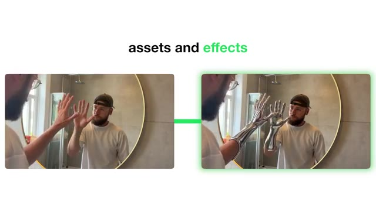
🔍 Agrandir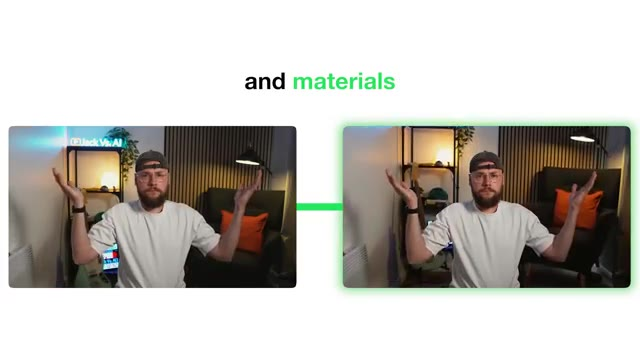
🔍 AgrandirDonc d'ici la fin, vous saurez exactement comment créer des plans d'effets visuels comme ceux-ci pour votre prochain court-métrage, clip musical ou publicité pour un client. Si vous aimez le contenu d'aujourd'hui, n'hésitez pas à mettre un pouce bleu pour moi et pensez à vous abonner. C'est parti. Donc comme vous pouvez le voir, il est désormais possible de combiner de vraies images avec l'IA pour produire une grande variété de plans d'effets visuels. Et avec les techniques que je vais démontrer dans cette vidéo, vous obtenez un niveau de contrôle impressionnant sur votre résultat final. Nous pouvons donc intégrer des éléments d'effets visuels
Interface & Outils : Présentation vidéo avec exemples de plans d'effets visuels et incrustation (PiP) du créateur en bas à droite.
Contenu textuel & Code : Widget graphique d'appel à l'action YouTube (pouce bleu et bouton d'abonnement) sur l'image #2. Exemples visuels de trucages par IA (paysage enneigé, corps musclé surdimensionné, interaction avec un miroir).
Action / Démonstration : Démonstration visuelle d'exemples de plans d'effets visuels générés par IA illustrant les propos du créateur, accompagnée d'un encadré PiP montrant Jack en studio.
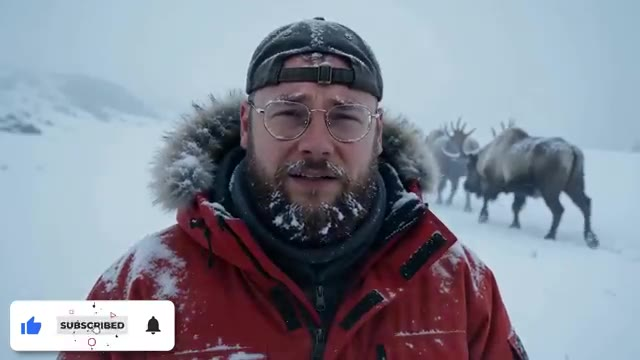
🔍 Agrandir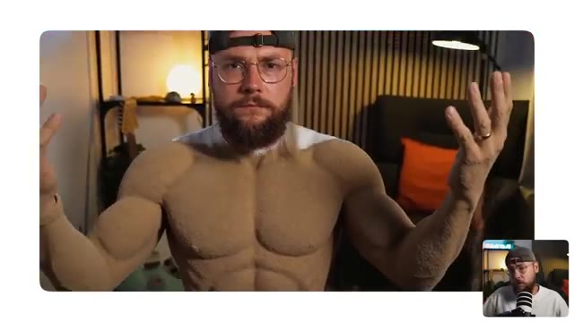
🔍 Agrandir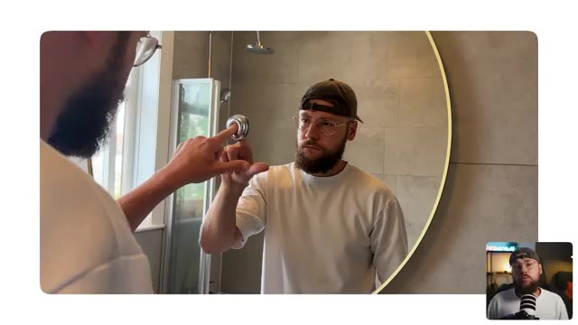
🔍 Agrandirtout en préservant la synchronisation labiale, le minutage et la performance globale de la séquence source. Ou nous pouvons complètement changer l'environnement, l'éclairage et les costumes tout en utilisant la séquence originale comme guide. J'ai dépensé énormément de crédits pour réaliser des tests très détaillés afin de pouvoir vous transmettre un flux de travail solide que vous pourrez utiliser pour vos propres projets créatifs. Nous allons commencer lentement, puis progresser vers des résultats vraiment complexes, y compris la création d'actifs IA personnalisés et leur intégration dans votre séquence source. Alors assurez-vous de rester jusqu'au bout pour voir ça.
Interface & Outils : Présentation face caméra sans partage d'écran (aucune interface logicielle affichée à l'écran).
Contenu textuel & Code : Aucun texte, prompt ou paramètre technique affiché à l'écran.
Action / Démonstration : Jack parle face à la caméra dans son studio en gesticulant pour illustrer ses propos, avec un retour vidéo incrusté (Picture-in-Picture) de lui-même dans le coin inférieur droit.
vers la fin de la vidéo. Donc le premier effet que je veux examiner est un effet qui est devenu plutôt viral. Vous l'avez probablement vu sur les réseaux sociaux récemment et c'est cet effet de pelage d'écran où nous pelons une tuile d'application d'un ordinateur portable par exemple et elle se comporte comme une feuille de plastique. Sur Higgs Field, nous voulons nous rendre dans le coin supérieur gauche, survoler l'onglet vidéo puis sélectionner C-Dance 2. Une fois ici, vous voulez importer vos séquences sources, ce qui est exactement comme vous l'imagineriez en train de faire semblant de peler cette tuile d'application. Ensuite, nous devons penser à tous les actifs supplémentaires que nous pouvons
Interface & Outils : Interface web de la plateforme Higgs Field montrant les onglets de navigation (Explore, Image, Video, Audio, Cinema Studio, etc.) et le panneau de contrôle de Seedance 2.0.
Contenu textuel & Code : Texte affiché sur l'interface : "Create Video", "Seedance 2.0", "Model: Seedance 2.0 v1", "Prompt", et sur le panneau de droite des instructions textuelles sur l'identité et le mouvement ("Match the source footage Video 1 exactly...").
Action / Démonstration : Le créateur montre un exemple d'effet visuel viral (pelage d'écran) puis navigue dans l'interface de Higgs Field (Seedance 2.0) pour expliquer l'importation de la vidéo source et la configuration des paramètres.
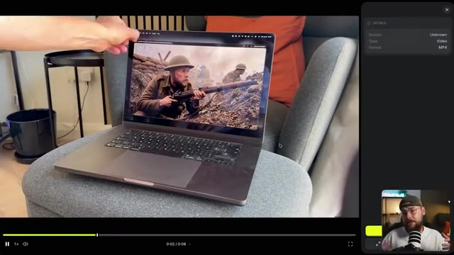
🔍 Agrandir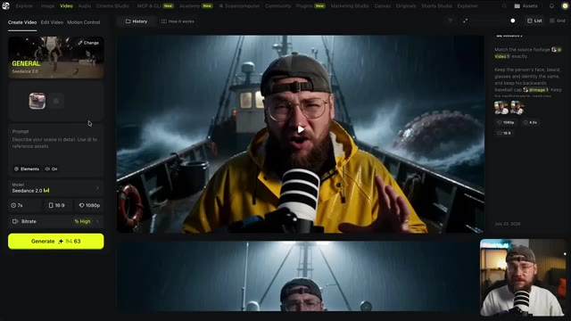
🔍 Agrandirun téléchargement qui sera utile pour C-Dance 2. Il s'agit de décomposer cet effet d'une manière vraiment pratique et ici je pense vraiment au calage. Dans les images sources, nous ne pouvons pas réellement voir l'arrière-plan du bureau. La plupart est caché par cette vignette d'application. Donc immédiatement j'ai identifié qu'il vaudrait la peine de prendre une capture d'écran de l'arrière-plan de mon bureau vide et de télécharger ceci comme référence d'image. Et bien que nous puissions voir l'image dans la vignette de l'application elle-même, qui est cette génération de moi
Interface & Outils : Interface de l'application C-Dance 2 / Navigateur web sur macOS.
Contenu textuel & Code : Panneau latéral avec les sections "Details" (Source: Original Upload, Type: Image, Format: PNG) et "Edit Image" (Color Grading, Upscale, Enhancer, Relight, Inpaint, Angles). Vidéo d'une scène de guerre avec des soldats dans des tranchées.
Action / Démonstration : Le créateur montre un ordinateur portable affichant une vidéo source, puis bascule sur l'interface de l'application C-Dance 2 pour illustrer l'analyse des calques et des images de référence.
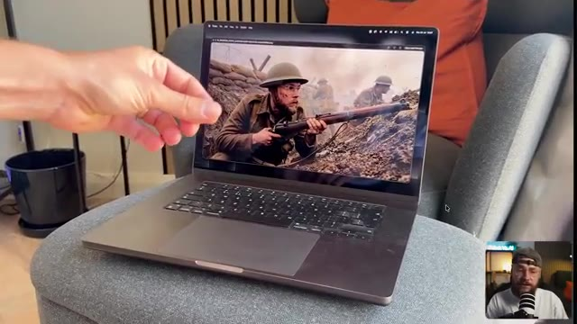
🔍 Agrandir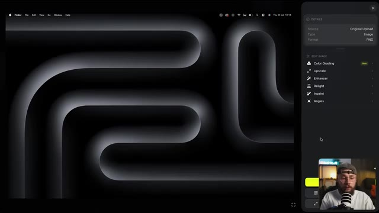
🔍 Agrandir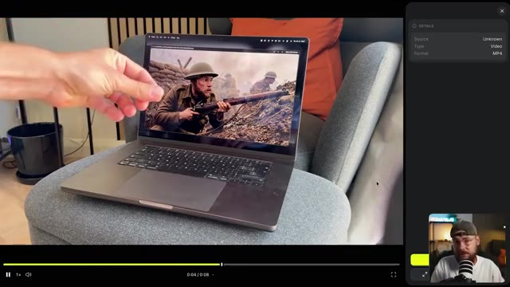
🔍 AgrandirEn tant que soldat de la Première Guerre mondiale, nous le visualisons sous un angle très spécifique et c'est assez éloigné de l'objectif de la caméra. Puisque nous voulons pouvoir traiter ceci comme son propre élément distinct, il est important de le télécharger également en tant que référence d'image. Maintenant, il nous manque une dernière pièce du puzzle, le prompt textuel. C'est ce qui va tout lier pour nous. Il va dire à C-Dance 2 comment utiliser nos séquences et les combiner avec nos références. Maintenant, écrire un bon prompt n'est pas facile. Ces modèles nécessitent un niveau de précision détaillé et c'est pourquoi la majorité de l'IA
Interface & Outils : Interface de lecteur multimédia, interface d'édition/visualisation d'image avec menu latéral, et interface d'une application web de type assistant textuel/IA (avec mention "Opus 4.8 Medium").
Contenu textuel & Code : Textes visibles : "DETAILS", "Source", "Type", "Format", "MP4", "Original Upload", "PNG", "EDIT IMAGE", "Color Grading", "Upscale", "Enhancer", "Relight", "Inpaint", "Angles", "Let's noodle", "How can I help you today?", "Opus 4.8 Medium".
Action / Démonstration : Le créateur montre des exemples de séquences vidéo et d'images de référence de soldats de la Première Guerre mondiale, puis bascule sur une interface textuelle pour l'écriture de prompts.
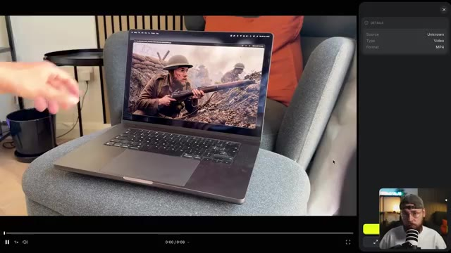
🔍 Agrandir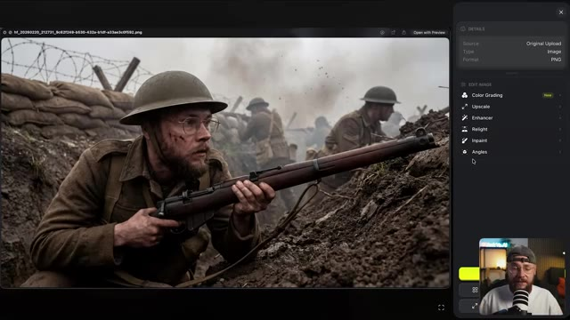
🔍 Agrandir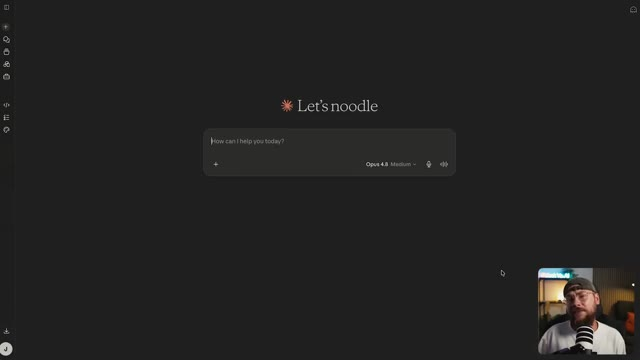
🔍 Agrandirles cinéastes utiliseront quelque chose comme Claude, ChatGPT ou Gemini pour les aider à concevoir leurs prompts. Je suis donc sur mon IA de prédilection qui est Claude et vous pouvez voir que j'ai téléchargé ce fichier MD. Il s'agit d'une compétence personnalisée que j'ai développée dans le but spécifique d'écrire des prompts pour des plans d'effets visuels et vous pourrez y accéder de manière totalement gratuite sur notre communauté school. Le lien pour cela se trouve en bas dans la description. La grande chose à propos de ce fichier MD est qu'il fonctionnera également sur ChatGPT, Gemini, Grok ou n'importe quel LLM que vous préférez. Nous voulons également télécharger ces références
Interface & Outils : Interface web de l'assistant IA Claude avec un affichage en Picture-in-Picture (PiP) du créateur en bas à droite.
Contenu textuel & Code : Texte affiché : "Let's noodle", "How can I help you today?", "Opus 4.8 Medium", et dans l'image 3 un fichier nommé "VFX-PROMPT-BUILDER-SKILL.md" aux côtés de deux images de référence.
Action / Démonstration : Le créateur montre l'interface de Claude avec le fichier de compétences personnalisé importé et s'apprête à téléverser des images de référence.
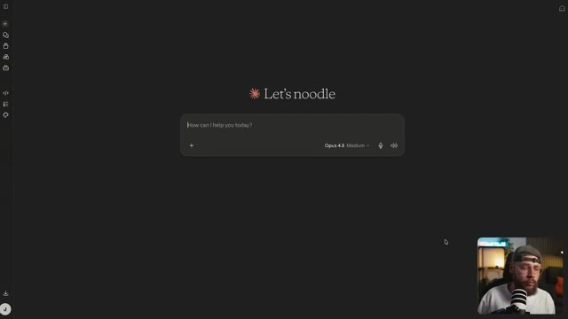
🔍 Agrandirdes images que nous avons données à C-Dance 2 pour que Claude ait le même niveau de contexte. J'aime aussi prendre une capture d'écran de mes images sources pour que Claude puisse comprendre le cadrage et la mise en scène. Maintenant que toutes ces références sont téléchargées, je suis prêt à décrire le type d'effet que je recherche. Le plus grand avantage, c'est que je n'ai pas besoin d'être trop technique ici, car Claude va faire tout le travail difficile pour nous en utilisant ce fichier MD. Je vais donc dire que je veux que mes mains s'étendent vers l'ordinateur portable et qu'au moment où je saisis le coin supérieur de celui-ci, je décolle cette vignette d'application.
Interface & Outils : Interface web de type assistant IA (Claude, intitulée "Let's noodle" avec le modèle réglé sur "Opus 4.8 Medium").
Contenu textuel & Code : Fichier Markdown "VFX-PROMPT-BUILDER-SKILL.md", vignettes d'images de référence (soldat en trench, texture noire, photo de la main soulevant l'écran), et champ de saisie avec le texte du prompt en anglais décrivant l'action de décoller une vignette d'application d'un écran de Mac.
Action / Démonstration : Le créateur montre l'importation de ses fichiers de référence dans l'interface de Claude puis saisit le prompt décrivant l'effet visuel recherché.
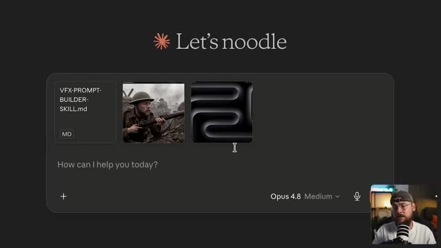
🔍 Agrandir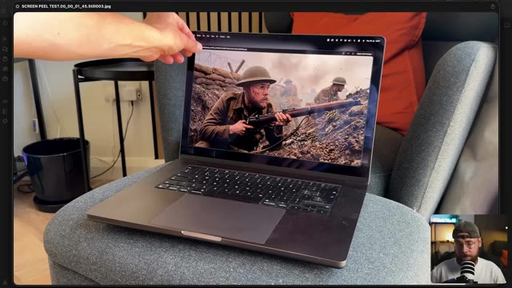
🔍 Agrandirhors de l'écran du Mac. Cela laisse ensuite le bureau vide, comme vous pouvez le voir dans ma référence. Je veux que cette tuile décollée ait toujours des coins arrondis et se comporte un peu comme l'une de ces fines feuilles plastifiées que l'on pourrait utiliser pour un projecteur. Je vais également télécharger l'image elle-même qui est affichée sur l'écran ainsi que l'arrière-plan du bureau. Et une fois que nous aurons envoyé tout cela, vous allez voir que Claude se met au travail et commence à lire la compétence de construction de prompts VFX.
Interface & Outils : Interface web d'un assistant de type LLM (style Claude) avec zone de prompt textuel, pièces jointes (fichiers Markdown et images) et affichage du processus de réflexion en cours.
Contenu textuel & Code : Texte du prompt saisi : "I want my hand to reach over to the laptop, and then, as I grab the top corner of it, I peel that app tile off of the Mac screen. It then leaves the plain desktop, as you can see in my reference. I want that peeled tile to still have rounded corners and behave a bit like one of those thin plastic-y sheets that you might use for a projector. I'll also upload the image itself that's being shown on the screen, as well as the desktop background." Étapes de réflexion de l'IA : "Thinking about creating a peeling app tile animation with physics-based behavior and visual effects" et "Read the VFX prompt builder skill". Fichiers joints : "VFX-PROMPT-BUILDER-SKILL.md" et images de référence. Modèle sélectionné : "Opus 4.8 Medium".
Action / Démonstration : L'interface affiche le texte du prompt en cours de soumission, puis l'assistant IA commence à analyser et à exécuter la tâche en lisant le fichier de compétences VFX.
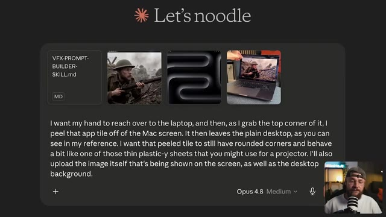
🔍 Agrandir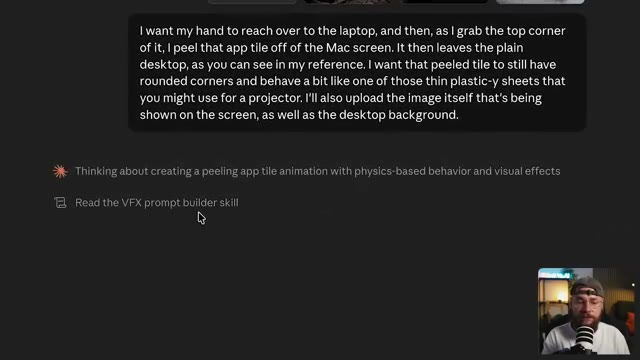
🔍 AgrandirEt après quelques instants, nous allons obtenir un prompt très détaillé qui ressemble à ceci. Nous voulons simplement copier ce prompt, retourner sur Higgsfield et le coller dans cette section ici. Et vous remarquerez également que j'ai pris le soin de taguer mes références partout où c'est pertinent. Ainsi, au début du prompt, nous disons : faire correspondre le tag de la source vidéo avec la vidéo un.
Interface & Outils : Interface d'un outil de génération vidéo par IA (probablement Higgsfield / Seedance) et interface de prompt textuel (type Opus / Claude).
Contenu textuel & Code : Texte du prompt détaillé avec horodatages ([00:01], [00:02], etc.) décrivant précisément les actions (mouvements de main, pelage d'une fenêtre d'application, texture acrylique, etc.), ainsi que le modèle réglé sur Seedance 2.0 au format 16:9 1080p pour 7s.
Action / Démonstration : Le créateur montre le prompt textuel généré contenant des instructions très précises et balisées avec des tags vidéo, puis montre l'interface de Higgsfield où ce prompt est collé et configuré.
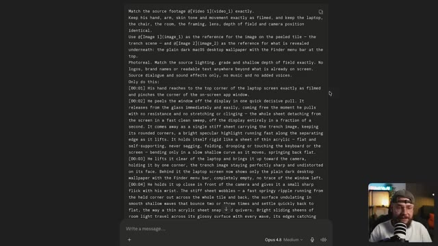
🔍 Agrandir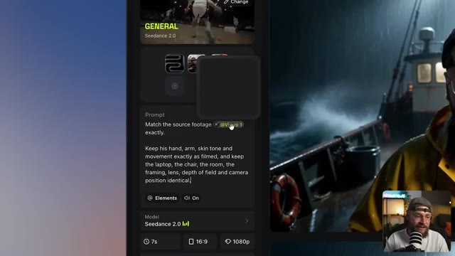
🔍 AgrandirEt si je descends un peu plus bas, nous disons d'utiliser l'image deux. Et nous avons cette référence ici comme référence pour l'image sur la tuile décollée. Et puis l'image un comme référence pour ce qui est révélé en dessous. Le fond d'écran uni et sombre du bureau macOS, donc plutôt que de simplement télécharger ces références, nous instruisons réellement Seedance sur la manière de les utiliser. Nous pouvons maintenant sélectionner la durée et le format d'image, en général je les fais correspondre à la longueur et au format d'image de la séquence source et ensuite vous
Interface & Outils : Interface de l'outil Seedance 2.0 avec panneau de prompts et paramètres de génération vidéo.
Contenu textuel & Code : Texte du prompt : "Use @Image 2 as the reference for the image on the peeled tile - the trench scene - and @Image 1 as the reference for what is revealed underneath: the plain dark macOS desktop wallpaper with the Finder menu bar at the top." Paramètres visibles : Modèle Seedance 2.0, durée 7s, format 16:9, résolution 1080p.
Action / Démonstration : Le créateur montre l'interface de Seedance 2.0 et détaille l'utilisation des références d'images dans le prompt textuel.
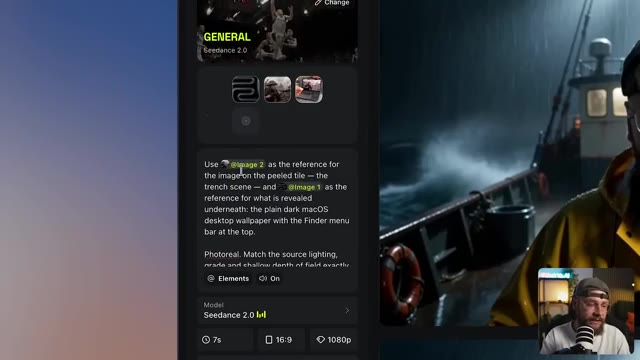
🔍 Agrandirvous pouvez aller de l'avant et sélectionner votre résolution souhaitée pour la plupart des cas 1080p va faire l'affaire Cependant, si vous êtes toujours dans l'étape de test et de raffinement où vous essayez vos prompts, je suggérerais de descendre à 480p afin de dépenser moins de crédits. Nous pouvons maintenant aller de l'avant et cliquer sur générer et jeter un œil au résultat.
Interface & Outils : Interface de l'outil de génération vidéo Seedance 2.0, affichant un menu déroulant pour le choix de la résolution avec une option sur 1080p, ainsi qu'un encadré PiP (Picture-in-Picture) de Jack en bas à droite.
Contenu textuel & Code : On peut lire les paramètres suivants : le modèle "Seedance 2.0", la durée de 7s, le ratio 16:9, la résolution 1080p sélectionnée dans le menu déroulant (proposant 480p, 720p, 1080p, 4k), le débit "Bitrate" réglé sur "High", et le bouton "Generate" indiquant un coût de 63 crédits.
Action / Démonstration : Le curseur de la souris survole le sélecteur de résolution 1080p pour montrer les différentes options de qualité vidéo disponibles dans Seedance 2.0.
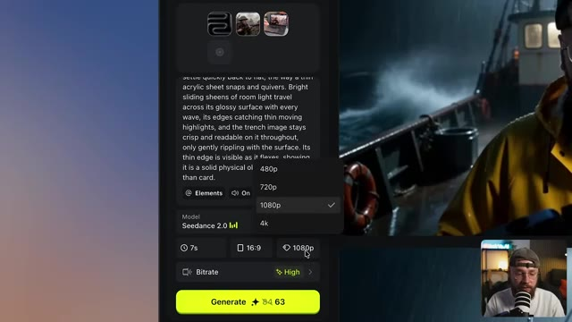
🔍 AgrandirUn résultat plutôt incroyable qu'on a obtenu ici. La façon dont la feuille de plastique se décolle de l'écran et se comporte ensuite lorsqu'elle est tout près de l'objectif de la caméra semble crédible.
Interface & Outils : Interface web de type plateforme de partage ou d'analyse de vidéos générées par IA (avec panneau latéral droit affichant les métadonnées, le prompt et un aperçu du créateur en PiP).
Contenu textuel & Code : Texte du prompt visible dans le panneau latéral : "Match the source footage @Video 1 exactly. Keep his hand, arm, skin tone and movement exactly as filmed, and keep the laptop, the chair, the room, the framing, lens, depth of field and camera position identical. Use as the reference @Image 2 for the image on the peeled tile — the trench scene — and @Image 1 as the reference for what is revealed underneath: the plain dark macOS desktop wallpaper with the Finder menu bar at the top."
Action / Démonstration : Le créateur montre une vidéo où une feuille plastique simulant une image de tranchée militaire est pelée d'un écran d'ordinateur portable, puis s'approche de la caméra, tandis que le panneau latéral affiche les instructions du prompt d'intelligence artificielle.
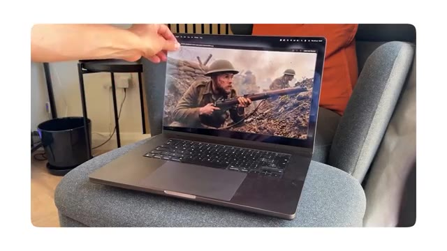
🔍 Agrandir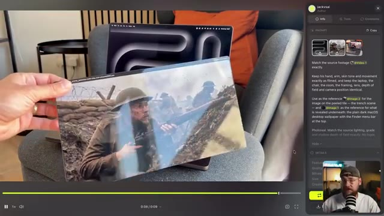
🔍 AgrandirCe qui vend vraiment cet effet, ce sont toutes ces très belles réflexions que nous obtenons à la fois sur la vignette de l'application elle-même ainsi que sur l'écran de l'ordinateur portable. Et ce que j'aime dans ce premier effet, c'est que c'est quelque chose que vous pouvez aller essayer dès maintenant si vous le souhaitez. Ce n'est pas trop écrasant, mais le processus que nous avons utilisé vous encouragera à commencer à penser un peu plus comme un artiste d'effets visuels.
Interface & Outils : Interface logicielle de génération vidéo par IA avec panneau de prompts à droite et aperçu vidéo grand format au centre.
Contenu textuel & Code : Texte du prompt visible : "Match the source footage @Video 1 exactly. Keep his hand, arm, skin tone and movement exactly as filmed, and keep the laptop, the chair, the room, the framing, lens, depth of field and camera position identical. Use as the reference @Image 2 for the image on the peeled tile - the trench scene - and @Image 1 as the reference for what is revealed underneath: the plain dark macOS desktop wallpaper with the Finder menu bar at the top."
Action / Démonstration : Manipulation d'une vidéo de démonstration montrant un effet d'IA où une fenêtre d'application se détache de l'écran avec des reflets et des textures réalistes.
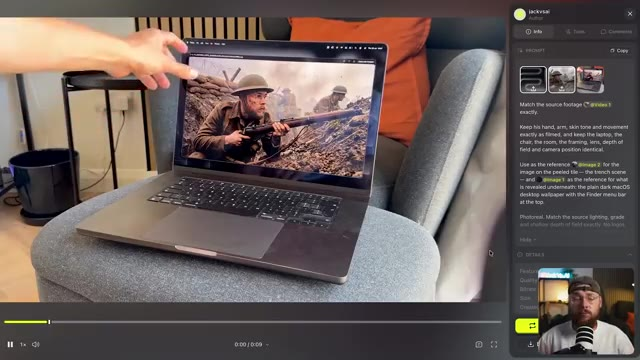
🔍 Agrandir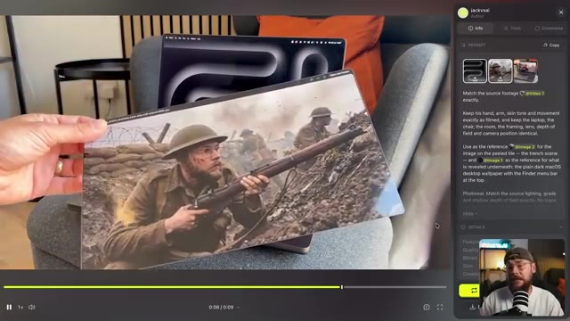
🔍 Agrandir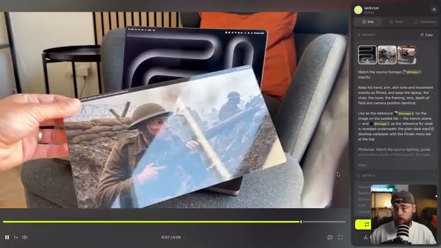
🔍 Agrandir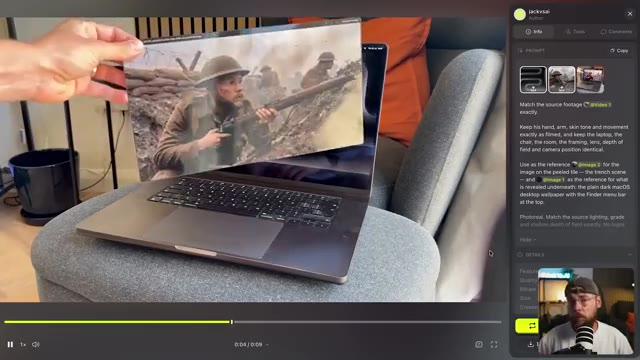
🔍 AgrandirMaintenant, passons à un peu de classique, et c'est cet effet de boule de feu. Le même niveau de planification est requis ici lorsque je recherchais les images elles-mêmes. J'ai ma main en quelque sorte repliée et nous avons laissé un espace vide pour que Seedance 2 y dépose la boule de feu naturellement. J'ai également pris une capture d'écran de la source vidéo et y ai ajouté cette forme rouge ici pour montrer exactement à Seedance 2 où je voulais placer la boule de feu. Et ce type de capture d'écran est quelque chose que nous allons utiliser encore et encore pendant ce processus. Je vais donc appeler cela une référence d'ancrage. À l'occasion, vous allez
Interface & Outils : Interface de l'outil de montage vidéo/IA avec panneau latéral de détails (Source, Type, Format, Edit Image : Color Grading, Upscale, Enhancer, Relight, Inpaint, Angles).
Contenu textuel & Code : Texte affiché à l'écran : « anchor reference » en vert, informations de détails de fichier (Source: Original Upload, Type: Video/Image, Format: MP4/PNG).
Action / Démonstration : Le créateur montre comment il prépare ses images sources en y ajoutant des formes géométriques colorées pour guider l'IA (Seedance 2) lors de la génération.
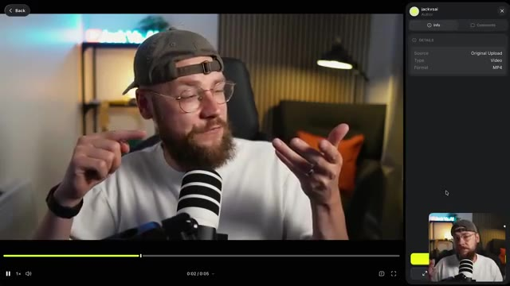
🔍 Agrandir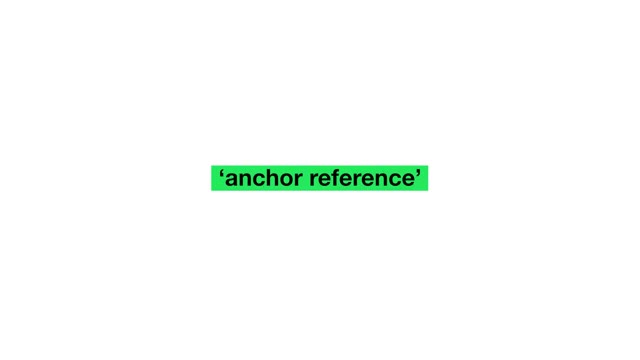
🔍 Agrandirtrouve que C-Dance 2 pourrait prendre quelques libertés créatives. Donc par là, je veux dire qu'il apportera des modifications aux séquences sources que vous n'avez jamais voulues. Notre référence d'ancrage fait exactement ce à quoi vous pourriez vous attendre. Cela force en quelque sorte C-Dance 2 à ne pas s'écarter trop de la séquence source.
Interface & Outils : Interface web de type plateforme de création ou d'édition vidéo par IA (avec un panneau latéral droit affichant les détails du média « Original Upload », « Image », « PNG » et des outils d'édition).
Contenu textuel & Code : Panneau latéral affichant les métadonnées (Author: jackvsai, Source: Original Upload, Type: Image, Format: PNG) et le menu "Edit Image" avec les options : Color Grading (avec un badge "New"), Upscale, Enhancer, Relight, Inpaint, Angles. Au centre, l'image montre le présentateur avec un cercle rouge superposé.
Action / Démonstration : Le présentateur pointe du doigt et présente une interface logicielle d'édition d'image/vidéo avec des options de modification et un cercle rouge ajouté sur l'écran.
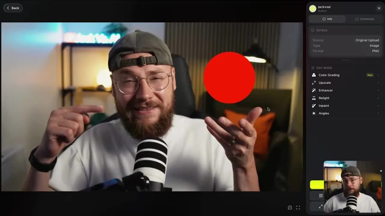
🔍 AgrandirSi nous jetons un rapide coup d'œil au prompt, vous verrez que nous y faisons référence ici. Nous disons d'utiliser l'image 1 comme référence pour la posture du personnage et la position et l'échelle de l'élément VFX. Et pour être clair, le reste du prompt que vous voyez ici a été conçu en utilisant exactement le même fichier MD et le même flux de travail à l'intérieur de Claude. Le début du prompt décrit essentiellement toutes les choses que nous voulons garder identiques. Et puis, lorsque nous allons plus loin, nous en arrivons à décrire l'effet que nous voulons créer. Laissez-moi vous montrer le résultat que nous avons obtenu. Créer de superbes plans VFX avec l'IA n'a jamais été aussi facile.
Interface & Outils : Interface textuelle (probablement Discord ou une interface de prompt) et rendu vidéo final montrant un effet spécial généré par IA.
Contenu textuel & Code : Texte du prompt visible : "Match the source footage @Video 1 exactly. Use @Image 1 as a reference for character posture and VFX element position and scale. Keep the person's face, hair, wardrobe and identity the same..."
Action / Démonstration : Le curseur de la souris survole le texte du prompt pour expliquer comment l'IA utilise les images de référence, puis la vidéo montre le résultat final avec l'effet de feu.
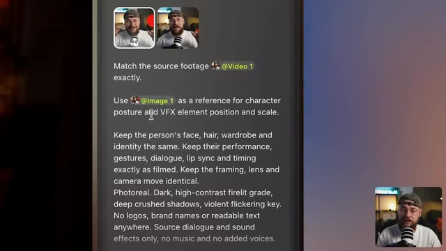
🔍 Agrandir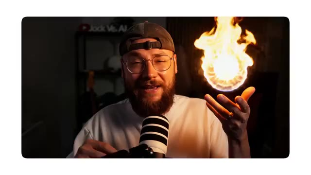
🔍 AgrandirTrès belle intégration ici de notre élément d'effets visuels dans la scène. Vous remarquerez que mon dialogue et ma synchronisation labiale n'ont pas du tout été altérés et que C-Dance 2 n'a apporté que les modifications que nous souhaitions, et c'est vraiment grâce à l'utilisation de notre référence d'ancrage. Vous constaterez peut-être que si vous n'utilisez pas d'ancre, Sea Dance 2 a tendance à faire un peu n'qu'importe quoi. Ce que vous remarquerez en revanche, c'est qu'il n'y a pas d'effet sonore pour l'orbe de feu, et c'est à la fois une bonne et une mauvaise chose.
Interface & Outils : Interface web d'un outil de génération vidéo par IA (probablement Seedance / C-Dance 2), avec un panneau latéral de configuration ("Details", "Edit Image", options de retouche comme Color Grading, Upscale, Relight, Inpaint, Angles).
Contenu textuel & Code : Texte de prompt visible dans le panneau latéral : "Only do this: The room goes dark and a huge violent ball of fire erupts into life floating just above his open cupped hand on the right of frame..."
Action / Démonstration : Jack démontre le résultat de la génération vidéo avec l'orbe de feu intégré dans la scène tout en expliquant l'importance de l'ancre de référence.
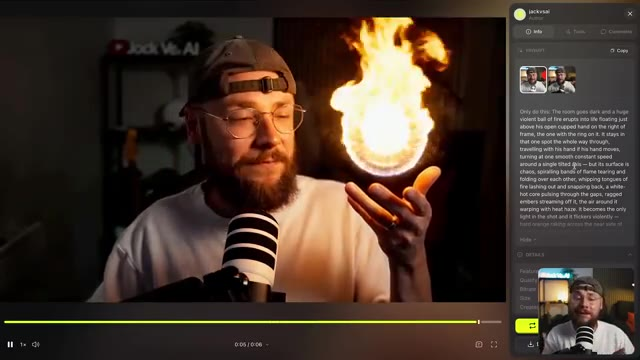
🔍 Agrandir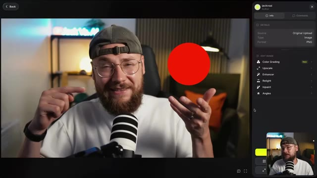
🔍 AgrandirSea Dance 2 semble donner la priorité à l'audio dans les séquences sources, surtout si quelqu'un est en train de parler. Maintenant, je préfère personnellement cela, car devoir refaire le doublage de ma voix serait un cauchemar, mais trouver un effet sonore de feu en ligne et l'insérer ensuite dans le montage vous donne vraiment un très bon niveau de contrôle en tant que cinéaste. Passons maintenant à l'effet en lui-même, il est vraiment superbe, en particulier ce genre d'éclairage ardent qui se projette sur mon t-shirt et mon visage. Pour créer
Interface & Outils : Interface de l'outil Sea Dance 2 comprenant un lecteur vidéo principal à gauche et un panneau de détails et de prompts à droite, avec un retour caméra incrusté en bas à droite.
Contenu textuel & Code : Panneau latéral affichant les détails de la génération : Texture/Prompt "Match the source footage @Video 1 exactly. Use @Image 1 as a reference for character posture and VFX element position and scale." Paramètres : Feature: Seedance 2, Quality: 1080p, Bitrate: High, Size: 1920x1080, Created: July 21, 2026.
Action / Démonstration : Le créateur présente l'effet visuel de flamme généré par IA dans Sea Dance 2, en pointant l'éclairage dynamique produit sur son propre visage.
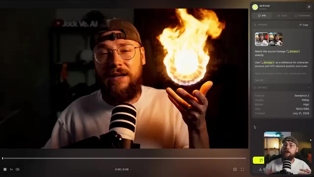
🔍 Agrandir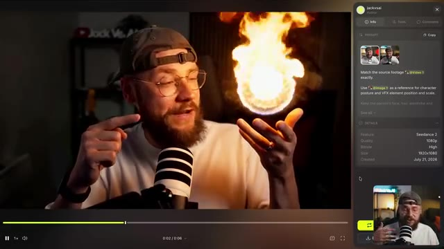
🔍 AgrandirCela, en suivant une méthode d'effets visuels traditionnelle, ne serait pas du tout facile. Sur un plateau de tournage, par exemple, ils devraient avoir une sorte de vraie lumière dans la même position que l'orbe pour s'assurer que moi-même en tant qu'acteur je suis éclairé correctement. Cependant, ces changements d'éclairage sont appliqués après le tournage et je pense que c'est une excellente démonstration du chemin parcouru par la vidéo par IA. Maintenant, et si nous voulions aller un peu plus loin que d'ajouter simplement un élément dans notre séquence source ? Et si nous voulions changer complètement l'environnement, l'éclairage et peut-être
Interface & Outils : Seedance (interface de génération et d'édition vidéo par IA avec panneau latéral d'options et de prompt).
Contenu textuel & Code : Texte du prompt visible dans le panneau latéral : "Match the source footage @Video 1 exactly. Use 📷 @Image 1 as a reference for character posture and VFX element position and scale." Paramètres techniques : Feature: Seedance 2, Quality: 1080p, Bitrate: High, Size: 1920x1080, Created: July 21, 2026.
Action / Démonstration : Le créateur montre l'écran de Seedance où la vidéo modifiée avec l'orbe de feu incandescent est lue, démontrant l'intégration d'effets visuels et l'éclairage réactif générés par l'IA.
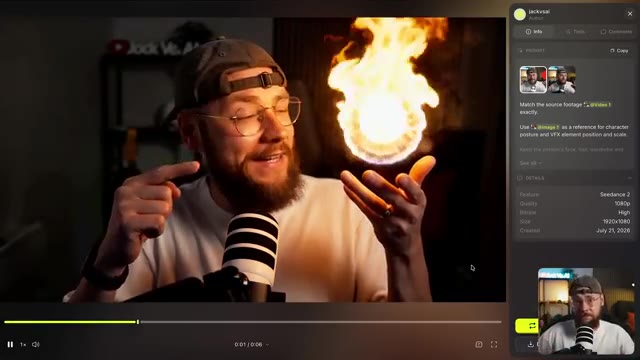
🔍 Agrandirmême nos vêtements ? Donc dans cet exemple, on me voit prononcer une réplique face caméra et je fais semblant de conduire quelque chose. Et je voulais voir si je pouvais utiliser C-Dance 2 pour me placer à l'intérieur du cockpit d'une navette spatiale. Donc approche similaire une fois de plus en termes de flux de travail global et du prompt. Vous pouvez voir une fois de plus que j'ai fini par ajouter une référence d'ancrage pour essayer de verrouiller la posture et la position. Et c'est le résultat que nous avons obtenu en retour. Pour créer des plans qui auraient été presque impossibles pour un créateur moyen jusqu'à présent. J'adore le design du vaisseau spatial lui-même
Interface & Outils : Interface web d'un outil d'intelligence artificielle vidéo (Seedance) avec panneau latéral de détails (Source, Type, Format) et options d'édition (Edit Image).
Contenu textuel & Code : Texte visible dans le panneau latéral : "jackvsai", "Author", "INFO", "COMMENTS", "DETAILS", "Source: Original Upload", "Type: Video", "Format: MP4" (puis "Image" / "JPG" sur l'autre image), "EDIT IMAGE", "Color Grading (New)", "Upscale", "Enhancer", "Relight", "Inpaint", "Angles".
Action / Démonstration : Le présentateur explique l'utilisation de C-Dance 2 pour insérer son personnage dans un cockpit de navette spatiale, en montrant l'interface et les options de l'outil.
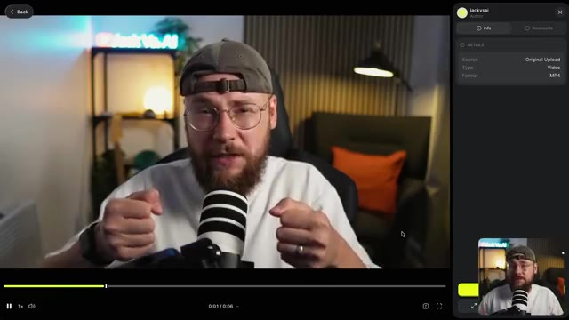
🔍 Agrandir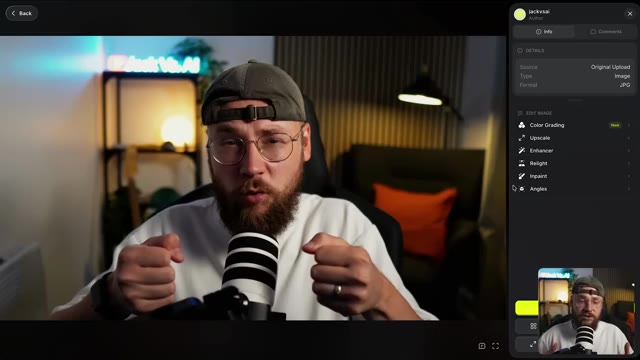
🔍 Agrandirici. L'éclairage a l'air super et Seedance 2 a réussi à trouver un juste milieu vraiment sympa entre rester fidèle à la vidéo d'origine mais aussi appliquer l'effet visuel que nous recherchions. J'ai également généré ce deuxième résultat ici où je suis retourné voir Claude et je lui ai demandé de modifier le prompt pour y ajouter un léger mouvement de caméra. Maintenant, j'aime vraiment cette génération mais le point que je veux souligner, c'est que vous ne devez pas vous contenter du premier résultat que vous obtenez. Tout l'intérêt d'utiliser une IA comme Claude est d'avoir cette conversation de va-et-vient afin de pouvoir itérer sur un
Interface & Outils : Interface web de Seedance 2 avec panneau latéral de prompts, détails techniques et encadré vidéo PiP du créateur.
Contenu textuel & Code : Texte du prompt visible : 'Match the source footage @Video 1 exactly. Use @Image 1 as a reference for character posture, hand position and framing. Keep the person''s face, hair, beard, glasses and identity the same... Feature: Seedance 2, Quality: 1080p, Bitrate: High, Size: 1920x1080, Created: July 21, 2026'.
Action / Démonstration : Le créateur montre le résultat de la génération vidéo dans l'interface et commente les différentes versions produites.
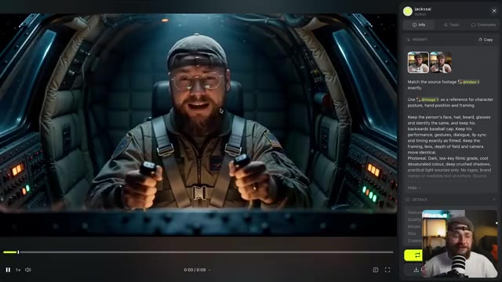
🔍 Agrandir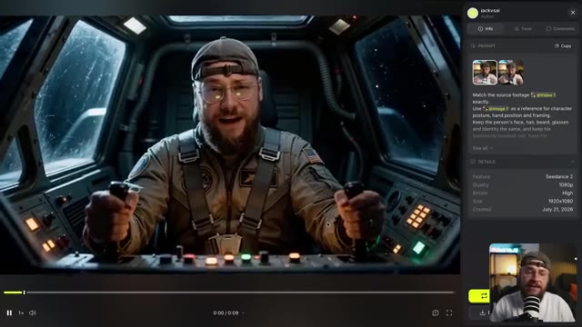
🔍 Agrandir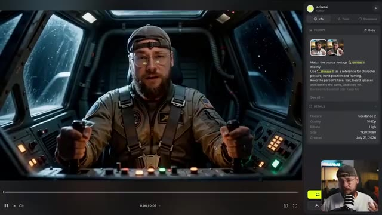
🔍 Agrandirgénération. Si vous n'obtenez pas tout à fait le résultat que vous aimez, retournez sur Claude, expliquez les choses que vous aimez, expliquez les choses que vous n'aimez pas, et ajustez le prompt jusqu'à ce que vous vous rapprochiez de ce que vous recherchez. Maintenant, dans cette séquence source, je tenais un tournevis parce que je savais que je voulais transformer cela en une scène inspirée d'Indiana Jones et remplacer le tournevis par une torche allumée par le feu. Je suis même allé plus loin avec la référence Anker et je l'ai réellement annotée pour dire spécifiquement à C-Dance 2 que le tournevis allait être transformé en un
Interface & Outils : Interface de lecteur vidéo de type plateforme de gestion/partage de médias (avec panneau d'informations à droite, barre de progression et commandes de lecture en bas).
Contenu textuel & Code : Texte rouge annoté sur la vidéo : "ADD TORCH HERE" avec une flèche pointant vers le tournevis. Panneau latéral affichant : "Source: Original Upload", "Type: Video", "Format: MP4".
Action / Démonstration : Le créateur montre la source vidéo originale où il tient un tournevis, puis illustre l'ajout d'une annotation textuelle pour indiquer à l'IA de transformer cet objet en torche enflammée.
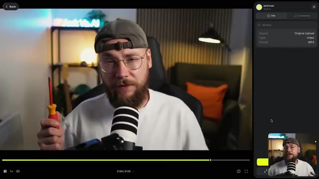
🔍 Agrandir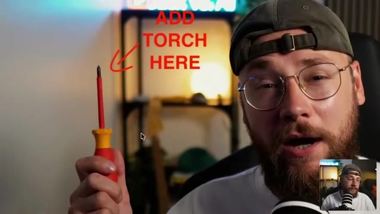
🔍 Agrandirtorche. Il peut être vraiment utile d'utiliser des accessoires dans vos séquences sources afin que C-Dance 2 puisse comprendre ce que vous voulez qu'il se passe et où. Tenir un accessoire que nous pouvons transformer avec l'IA est plus utile que de n'avoir rien du tout. Laissez-moi aller de l'avant et vous montrer le résultat que nous avons obtenu. Et maintenant, j'utilise l'IA pour réinventer les flux de travail créatifs. Encore une fois, je suis constamment émerveillé par la qualité de C-Dance 2. Regardez simplement l'éclairage provenant du feu au sommet de la
Interface & Outils : Interface de lecteur vidéo web avec panneau latéral d'informations et incrustation vidéo (PiP) en bas à droite.
Contenu textuel & Code : Détails du fichier vidéo source (Original Upload, Video, MP4) dans le panneau latéral. Rendu IA montrant un personnage de type aventurier avec un chapeau et une veste en cuir dans une jungle brumeuse.
Action / Démonstration : Le créateur montre le résultat de la transformation par IA où le tournevis simple de la vidéo source est devenu une torche enflammée tenue en main, démontrant la cohérence de l'éclairage.
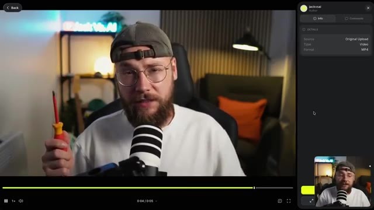
🔍 Agrandir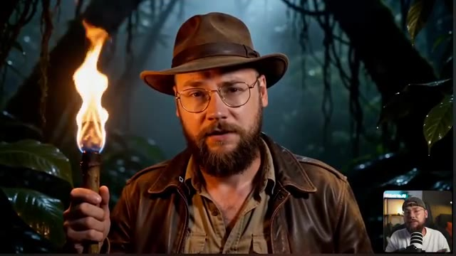
🔍 Agrandirtorche. La façon dont mes vêtements bougent et même ce mouvement vraiment subtil sur cette feuille sur le côté droit du cadre. Tout cela est vraiment super. Et maintenant je passe du chaud au froid. Nous pouvons utiliser ce même flux de travail pour me placer dans cet environnement enneigé. Un autre résultat incroyable avec lequel j'ai vraiment eu du mal à trouver des défauts. Visuellement assez impressionnant. Et puis nous avons moi sur le pont d'un navire qui semble avoir eu quelques problèmes avec une géante pieuvre. Plutôt
Interface & Outils : Interface de l'outil de génération vidéo Seedance 2 avec panneau latéral d'informations, prompts et paramètres.
Contenu textuel & Code : Texte du prompt visible : « Match the source footage @Video 1 exactly. Keep the person's face, beard, glasses and identity the same, and keep his backwards baseball cap... ». Paramètres : Feature: Seedance 2, Quality: 1080p, Bitrate: High, Size: 1920x1080, Created: July 23, 2026.
Action / Démonstration : Le créateur présente différents résultats de génération vidéo en changeant d'environnement (jungle, neige, bateau avec pieuvre) via l'interface Seedance 2.
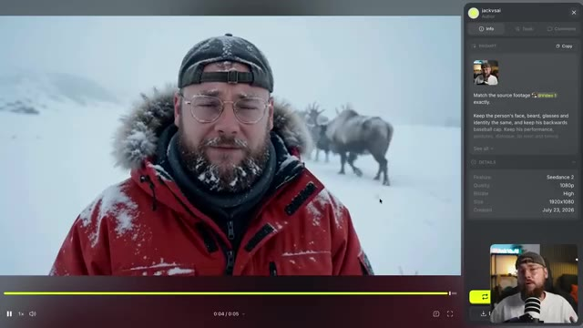
🔍 Agrandir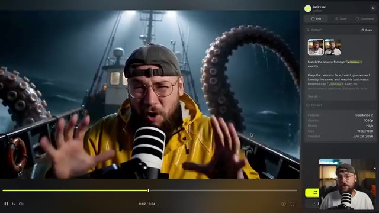
🔍 AgrandirMauvaise journée au bureau là. Maintenant, vous allez remarquer que mon micro est toujours présent dans la génération et c'est peut-être quelque chose que vous voulez, ou peut-être pas. Honnêtement, si vous voulez qu'il soit supprimé, je vous recommanderais de relancer exactement la même génération. Ne changez pas vos références. Ne changez pas votre prompt et il est probable qu'il disparaisse. Parfois, il y aura ces petits caprices dans vos générations et le simple fait de les relancer peut régler ces problèmes. J'aime plutôt bien que le micro soit là, en fait. Ça ne rend pas nécessairement complètement
Interface & Outils : Interface utilisateur de l'outil de génération vidéo par IA Seedance, avec lecteur vidéo principal à gauche et panneau de prompt / détails techniques à droite.
Contenu textuel & Code : Texte du prompt visible dans le panneau latéral : « Match the source footage @Video 1 exactly. Keep the person's face, beard, glasses and identity the same, and keep his backwards baseball cap @Image 1. Keep his performance, gestures... ». Paramètres de détails : Feature : Seedance 2, Quality : 1080p, Bitrate : High, Size : 1920x1080, Created : July 23, 2026.
Action / Démonstration : Lecture de la vidéo générée dans l'interface Seedance montrant Jack dans une ambiance de tempête maritime avec des tentacules de poulpe géant en arrière-plan.
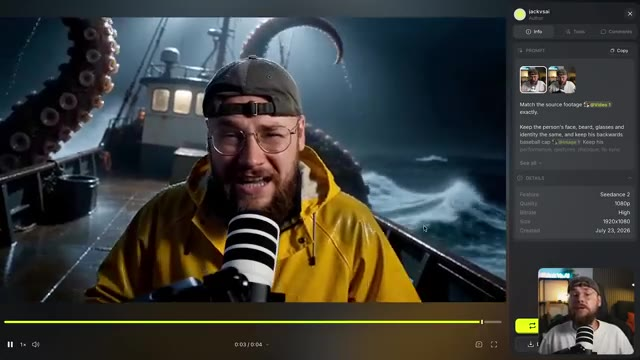
🔍 Agrandirsens physique. On pourrait deviner que ça tourne un peu avec l'orientation du navire, mais je ne sais pas, il y a quelque chose d'assez amusant à l'avoir dans le plan. Maintenant, je pense qu'on est prêts à passer à la vitesse supérieure. Et si vous vouliez créer vos propres éléments personnalisés, puis les intégrer dans vos plans d'effets visuels. J'ai donc généré ce monstre de pierre ici dans Midjourney. Je l'ai ensuite importé dans Higgsfield et, en l'utilisant comme référence d'image aux côtés de ce cadre de prompt de feuille de personnage et de GPT image 2, j'ai élaboré cette référence ici. En ce qui concerne les images sources, je
Interface & Outils : Interface web de Seedance 2 et de la plateforme Higgsfield.
Contenu textuel & Code : Texte du prompt visible dans l'image #3 : "Character reference sheet — four views on a neutral grey background: [VIEW 1 — FULL BODY, FRONT]... [VIEW 2 — FULL BODY, REAR]... [VIEW 3 — FRONT CLOSE-UP]... [VIEW 4 — PROFILE CLOSE-UP]...". Paramètres visibles : "GPT Image 2", résolution "1920x1080", format "16:9", et bouton "Generate". Sur l'image #1, les détails de Seedance 2 indiquent une qualité "1080p", "High", format "1920x1080", et la date "July 23, 2026".
Action / Démonstration : Le créateur navigue dans l'interface de Higgsfield pour présenter la création d'une feuille de personnage (character reference sheet) à partir d'un monstre généré sur Midjourney.
Je suis juste allé vers quelque chose de vraiment simple, moi en train de prononcer des lignes de dialogue face caméra, mais je me suis assuré de fournir cette feuille de personnages à la fois à C-Dance 2 comme référence ainsi qu'à Claude lorsque je concevais le prompt. Quelque chose d'autre que j'ai souligné lorsque je développais le prompt avec Claude était le sens de l'échelle. Je voulais être vraiment clair avec Claude sur le fait que le monstre de pierre était nettement plus grand que moi. Ne jamais supposer qu'un outil d'IA comprendra ce que vous voulez.
Interface & Outils : Interface de type application de gestion ou de génération d'images avec panneau latéral de métadonnées et prompt.
Contenu textuel & Code : Texte visible du prompt : « Character reference sheet — four views on a neutral grey background: [VIEW 1 — FULL BODY, FRONT] Full-body front-facing three-quarter view of this character, full body visible head to feet. [VIEW 2 — FULL BODY, REAR] Full-body rear view of the same character, directly from behind... ». Paramètres : Modèle GPT Image 2, Qualité High, Taille 2688x1520, Créé le 21 juillet 2026.
Action / Démonstration : Présentation à l'écran de la feuille de personnages du monstre de pierre mentionnée dans le discours audio.
Il vaut mieux être explicite sur ces choses-là. Voici donc l'approche, notre métrage source, la feuille de personnage utilisée comme référence ici, et enfin, comme vous l'avez deviné, notre référence d'ancrage, la capture d'écran des plans originaux. Allons jeter un œil à nos résultats. Ainsi, à la fin, vous saurez exactement comment créer des plans d'effets visuels comme ceux-ci pour votre prochain court-métrage, clip vidéo ou publicité pour un client. C'est donc une autre génération incroyable ici. J'adore vraiment cette énorme ombre que le monstre de roche projette sur moi, cela aide vraiment à vendre ce sentiment d'échelle. Grâce à notre référence de personnage
Interface & Outils : Interface web d'un outil de génération vidéo par IA (probablement Higgsfield ou similaire) avec panneau de prompt et prévisualisation vidéo.
Contenu textuel & Code : Texte du prompt visible : "Match the source footage @Video 1 exactly. Use @Image 2 as the reference for the creature's material, form and colour. Keep the person's face, hair, beard, glasses, cap, wardrobe and identity the same. Keep his performance, gestures, dialogue, lip sync, eyeline and timing exactly as filmed..."
Action / Démonstration : Le créateur montre le prompt détaillé utilisé pour générer la vidéo avec les différentes images de référence intégrées.
feuille ainsi Seedance 2 a fait un excellent travail pour garder notre personnage cohérent par rapport à ce que j'ai généré sur Midjourney. Je voulais aussi vous montrer une autre génération ici qui a plutôt bien fonctionné et plutôt mal fonctionné. L'idée était que je voulais faire comme si le toit de mon bureau était arraché et ensuite faire entrer le monstre de pierre dans le cadre. Ce qui est super, c'est qu'en fait je regarde dans l'espace vide que le monstre de pierre finit par occuper. Dans la génération finale, on dirait vraiment que je le regarde alors qu'il n'a jamais vraiment été là. Le
Interface & Outils : Interface de l'outil Seedance 2 affichant un lecteur vidéo, le prompt textuel et les détails de génération.
Contenu textuel & Code : Texte du prompt visible : "Match the source footage @Video 1 exactly. Use @Image 2 as the reference for the creature's material, form and colour..." et détails techniques (Seedance 2, 1080p, High, 1920x1080).
Action / Démonstration : Le créateur présente l'interface de Seedance 2 et commente les résultats de génération vidéo avec le monstre de pierre.
Le problème, c'est que je n'arrivais pas à obtenir un rendu satisfaisant pour l'effet du toit arraché, cela faisait toujours trop artificiel. Vous remarquerez donc que dans cette génération, je réagis à quelque chose qui se passe au-dessus de moi alors qu'en réalité, rien ne se produit. Ce que je veux dire, c'est que lorsque vous enregistrez vos sources vidéo, c'est super de réagir comme si l'élément avait toujours été là, mais ce serait peut-être une bonne idée d'enregistrer plusieurs versions. Je pense que j'en demandais trop à l'IA en voulant produire à la fois l'effet de toit et le monstre de roche, donc avec le recul, j'aurais dû enregistrer une version où je ne réagissais tout simplement pas à
Interface & Outils : Interface de l'outil Seedance 2 avec panneau latéral de configuration et de prompt.
Contenu textuel & Code : Texte du prompt visible dans l'interface : "Match the source footage @Image 0 exactly. Use @Image 3 as the reference for the creature's material, form and colour." Paramètres : Feature: Seedance 2, Quality: 1080p, Bitrate: High, Size: 1920x1080, Created: July 21, 2026.
Action / Démonstration : Jack présente l'interface de Seedance 2 montrant le rendu du monstre de roche généré par IA à côté de lui.
le toit du tout et ensuite cela aurait très bien fonctionné. Encore une fois, nous nous concentrons vraiment sur le niveau de planification lorsque vous sourcez vos séquences pour vous donner autant de flexibilité que possible lors de vos générations et du montage. Un autre exemple de pré-génération d'éléments puis de leur intégration ultérieure avec l'IA est le cas où j'ai généré cette image ici. J'ai donc déposé une capture d'écran de la séquence source dans GPT Image 2 et je l'ai combinée avec ce prompt pour construire ce hologramme que vous pouvez voir à l'écran maintenant. Et puis j'ai utilisé cela comme une image
Interface & Outils : Interface web de génération vidéo/image par IA avec panneaux latéraux de configuration, barres de prompts et mini-lecteur PiP de l'auteur en bas à droite.
Contenu textuel & Code : Texte du prompt visible sur l'image 2 : "Match the source footage @Image 9 exactly. Use @Image 3 as the reference for the creature's material, form and colour..." et détails techniques (Feature: Seedance 2, Quality: 1080p, Bitrate: High). Texte du prompt sur l'image 4 : "Character reference sheet — four views on a neutral grey background..." avec les options du modèle GPT Image 2.
Action / Démonstration : Le créateur montre des exemples concrets de l'interface de l'outil d'IA, détaillant les prompts utilisés et la façon dont les images et vidéos source sont combinées et éditées.
référence pour simplement le placer sur un fond gris simple. Donc nous l'avons eu comme son propre élément. Vous pouvez voir dans mes prompts que je dis à C-Dance 2 d'utiliser cette image ici comme référence, le look final de l'hologramme. Et j'ai en fait utilisé plusieurs références d'ancrage différentes ici. La première est le moment où je touche ma montre. Et la seconde est là où je touche le milieu de l'écran, ce qui est l'endroit où l'hologramme va apparaître. J'ai donc pu combiner ces références, mon prompt et la source vidéo pour obtenir un résultat comme celui-ci. Passons aux choses sérieuses.
Interface & Outils : Interface web de génération vidéo par IA (probablement Seedance / C-Dance 2), avec panneau de prompts textuels, sélection de références visuelles en haut et mini-fenêtre PiP du créateur en bas à droite.
Contenu textuel & Code : Textes de prompts visibles : "show only the holographic UI against a seamless grey backdrop. Preserve the style, composition and focal length.", "Use @Image 3 as the reference for the hologram's finished look only — its cyan colour, concentric ring layout, fine graph and readout detail...", "Match the source footage @Video 1 exactly. Keep the person's face, hair, beard, glasses, cap, wardrobe, watch and identity the same." Modèle indiqué : GPT Image 2, taille 2688x1520, date July 22, 2026.
Action / Démonstration : Le créateur navigue dans l'interface de l'outil d'IA, montrant les différentes images de référence sélectionnées et faisant défiler les prompts textuels utilisés pour combiner la source vidéo et l'élément holographique.
Maintenant, j'ai vraiment eu du mal à aligner tout cela au niveau du timing, car j'ajoute généralement un peu d'espace avant que je ne veuille que l'effet commence, ainsi qu'après. Mais ce que j'ai constaté qui n'arrêtait pas de se produire, c'est que l'hologramme apparaissait et ensuite je tapotais ma montre, donc ça n'avait pas vraiment de sens. Alors ce que j'ai trouvé qui fonctionnait mieux, c'était de rogner le clip tout en bas pour qu'il commence au moment exact où je tapote ma montre. Vous verrez qu'en utilisant cette approche, le timing s'accorde vraiment très bien, de sorte que ce moment exact correspond au moment où l'hologramme apparaît réellement, et ensuite vous pouvez ajouter
Interface & Outils : Seedance (interface de génération et d'édition vidéo par IA avec panneau latéral de prompts et de détails techniques).
Contenu textuel & Code : Texte du prompt visible dans le panneau latéral : "Match the source footage @Video 1 exactly. Keep the person's face, hair, beard, glasses, cap, wardrobe, watch and identity the same. Keep his performance, gestures, dialogue, lip sync, eyeliner and timing exactly as filmed". Paramètres visibles : Feature: Seedance 2, Quality: 1080p, Bitrate: High, Size: 1920x1080, Created: July 22/23, 2026.
Action / Démonstration : Le créateur montre l'interface de Seedance avec la prévisualisation vidéo de l'effet holographique circulaire et l'ajustement du timing lié au geste de la montre.
le début du plan dans votre montage si vous le souhaitez. Maintenant, nous plongeons vraiment dans le grand bain pour recréer quelques plans d'effets visuels classiques de films hollywoodiens. Honnêtement, je ne savais pas trop comment ces résultats allaient tourner. J'ai été vraiment très impressionné. La première chose que j'ai dû essayer, c'est l'effet de miroir classique de Matrix. Dans le film, Neo pose son doigt contre un miroir et il finit par se comporter comme un fluide, finissant par couler le long de son bras. Et si vous ne savez pas de quoi je parle ou de ce qui se passe après cela, s'il vous plaît, allez-vous en et allez regarder l'original.
Interface & Outils : Interface web de Seedance avec lecteur vidéo intégré, barre de timeline, options de téléchargement et panneau latéral d'informations (Info/Tools/Comments), onglets Prompt et Details.
Contenu textuel & Code : Texte du prompt visible dans l' panneau latéral : "Match the source footage @video 1 exactly. Keep the person's face, hair, beard, glasses, cap, wardrobe, watch and identity the same. Keep his performance, gestures, dialogue, lip sync, outlines and timing exactly as filmed." Dans les détails : "Feature: Seedance 2", "Quality: 1080p", "Bitrate: High", "Size: 1920x1080", "Created: July 23, 2026".
Action / Démonstration : Le créateur présente l'interface de Seedance et montre des exemples de vidéos générées ou éditées, incluant une vue de son studio modifiée par IA et une séquence dans une salle de bain devant un miroir.
Film Matrix. C'est toujours incroyable. Donc j'ai cette séquence source ici où je fais essentiellement semblant que le miroir commence à se comporter d'une manière un peu bizarre. Encore une fois, j'utilise mon prompt conçu par Claude en utilisant le même processus avec cette capture d'écran ici pour servir de référence d'ancrage. Vous verrez que je balise cette référence d'ancrage ici lorsque je décris le plan d'origine pour le verrouiller. Laissez-moi vous montrer le résultat que j'ai obtenu.
Interface & Outils : Interface de gestion de projets vidéo / IA avec panneau latéral d'édition, métadonnées du fichier source et retour caméra PiP en bas à droite.
Contenu textuel & Code : Informations du fichier affichant "Original Upload", "Video / JPG", format MP4/JPG, options d'édition (Color Grading, Upscale, Enhancer, Relight, Inpaint, Angles).
Action / Démonstration : Présentation de la vidéo source avec le miroir et de la capture d'écran de référence servant d'ancre pour le prompt d'intelligence artificielle.
D'une manière générale, vraiment des trucs incroyables. Je ne suis pas un grand fan de la façon dont ça ressort un peu du miroir quand je fais contact pour la première fois avec mon doigt, mais la façon dont le fluide du miroir descend le long de mon poignet et se comporte quand je fais pivoter mon bras a l'air super. Je suis sûr que vous pouvez apprécier à quel point ce flux de travail pourrait être utile si vous êtes quelqu'un qui aime faire des courts métrages mais qui n'a tout simplement pas le savoir-faire pour créer ces types d'effets vous-même. Pour l'exemple suivant, je voulais essayer de recréer la transformation de l'Homme-Sable dans Spider-Man 3 ou du moins obtenir quelque chose de proche.
Interface & Outils : Interface d'une plateforme vidéo en ligne (similaire à Discord ou une application de type lecteur/partage multimédia) avec un volet latéral droit affichant les détails, les prompts et les informations de fichier.
Contenu textuel & Code : Texte du prompt visible dans le panneau latéral de l'image 2 : "This shot has three separate things that must never be confused: THE GLASS is the flat mirror surface on the wall; THE REFLECTED MAN is his normal reflection in the glass, ordinary skin, white shirt and flesh-coloured arm; and THE SILVER is a liquid chrome effect that does not exist yet. For the first part of the shot there is no silver anywhere..."
Action / Démonstration : Jack commente et analyse les exemples de vidéos générées par IA affichés à l'écran, en examinant les détails du rendu du miroir liquide et le prompt associé.
ou similaire à ce résultat. J'ai donc cette séquence vidéo de moi avec les bras levés, faisant semblant qu'il se passe quelque chose de génial alors qu'en réalité j'ai juste l'air d'un bizarre qui ne sait pas jouer la comédie assis dans son bureau, et je voulais pousser un peu le bouchon ici en incluant des mouvements de caméra qui n'étaient pas dans la source, donc lorsque j'ai briefé Claude, je lui ai demandé d'inclure un zoom rapide (crash zoom) pour qu'on se rapproche vraiment de ce genre de transformation granulaire et que le sable bouge entre ma main et mes poignets, puis de dézoomer pour qu'on puisse voir la transformation terminée, ici vous pouvez voir
Interface & Outils : Interface de lecteur vidéo avec panneau latéral de détails (Source, Type, Format) et vignette Picture-in-Picture (PiP) du créateur.
Contenu textuel & Code : Panneau latéral affichant « DETAILS », « Source : Original Upload », « Type : Video », « Format : MP4 », ainsi que le nom d'auteur « jackvsai » et les onglets « Info » et « Comments ».
Action / Démonstration : Le lecteur vidéo affiche la lecture de la séquence de démonstration avec une incrustation vidéo du créateur parlant dans son micro en bas à droite.
la référence de l'ancrage ou la capture d'écran que j'ai téléchargée par Claude et C-dance 2 pour verrouiller la composition. Cela étant dit, laissez-moi vous montrer le résultat que j'ai obtenu. J'adore vraiment celui-ci. Le zoom rapide fonctionne très bien. On peut vraiment apprécier ces effets de particules parce qu'on est dans ce gros plan. Généralement, un autre résultat incroyable. Si je devais être hypercritique, j'apporterais
Interface & Outils : Interface de l'outil Seedance 2, avec panneau latéral de détails à droite, barre de lecture en bas et encadré vidéo PiP du créateur en bas à droite.
Contenu textuel & Code : Dans le panneau de droite : prompt visible « Match the source footage @Video 1 exactly. Use @Image 1 as a reference for his starting posture and framing... », section DETAILS avec Feature: Seedance 2, Quality: 1080p, Bitrate: High, Size: 1920x1080, Created: July 22, 2026.
Action / Démonstration : Le créateur commente et présente l'interface de Seedance 2 ainsi que le résultat vidéo généré par intelligence artificielle mettant en scène des effets spéciaux de particules de sable.
le fait que mes lunettes ne se transforment pas en sable. Elles restent dans le même matériau qu'avant, même si mon t-shirt et tout le reste de mon corps se transforment en sable. Il y a donc un petit problème là. Mais malgré tout, le fait que l'intelligence artificielle soit capable de produire un plan d'effets visuels à ce niveau est vraiment impressionnant. Sur ce, les gars, nous sommes arrivés à la fin de la vidéo d'aujourd'hui. Si vous avez apprécié le contenu d'aujourd'hui, n'oubliez pas de lâcher un pouce bleu pour moi et pensez à vous abonner.
Interface & Outils : Interface de la plateforme Seedance 2 avec lecteur vidéo intégré, panneau de prompt textuel ("Match the source footage..."), détails de génération (qualité 1080p, débit High, résolution 1920x1080) et mini-fenêtre PiP du créateur.
Contenu textuel & Code : Texte du prompt visible dans le panneau latéral droit : "Match the source footage @Video 1 exactly. Use @Image 1 as a reference for his starting posture and framing." Paramètres techniques : Feature: Seedance 2, Quality: 1080p, Bitrate: High, Size: 1920x1080, Created: July 22, 2026.
Action / Démonstration : Le créateur commente et analyse la vidéo générée par l'IA sur l'interface de Seedance 2, visualisant le résultat des effets visuels de désintégration en sable.
Cela aide vraiment à soutenir la chaîne et à permettre à cette communauté de continuer à grandir. Merci beaucoup d'avoir regardé les gars et je vous retrouve dans la prochaine.
Interface & Outils : Vidéo générée par IA en plein écran avec un encadré PiP (Picture-in-Picture) du créateur.
Contenu textuel & Code : Rendu visuel d'une scène de type aventurier/explorateur dans une jungle mystérieuse éclairée par une torche, et petit encadré vidéo montrant Jack face caméra dans son studio.
Action / Démonstration : Le créateur montre à l'écran un exemple de génération vidéo par intelligence artificielle tout en concluant sa vidéo, avec son retour caméra incrusté en bas à droite.